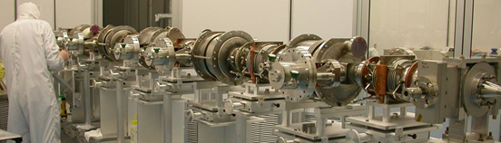

I perform research in Cornell University's Superconducting Radio-Frequency (SRF) Group. As a part of the physics department, the Cornell SRF Group investigates many interesting questions relating to superconductivity and materials science:
- What is the maximum high frequency magnetic field that could be theoretically screened using a given superconductor?
- What non-fundamental mechanisms limit the achievable field in a cavity? How can these be avoided?
- What are the origins of the temperature-independent part of the surface resistance osberved in cavity tests?
- What cavity preparation techniques minimize the overall surface resistance at useful gradients?
- Can alternative materials or layerings be used to reach higher fields and smaller surface resistances?
In addition to basic research into the fundamental bevhavior of accelerator cavities, the Cornell SRF Group develops technologies and methodologies for assembling the cryomodules that house cavities in accelerators. Cornell is also performing prototype studies for an Energy Recovery Linear Accelerator (ERL) project, which would provide unprecented levels of electron current in a CW machine with very small power consumption.

My undergraduate degree is in Engineering Physics from Queen's University in Kingston, Ontario, Canada. Engineering Physics was an appropriate degree, as I am interested in scientific research and answering some of the fundamental questions about our universe, but I also enjoy problem solving and designing and building complex machines. Accelerator Physics appeals to me as a field that can provide both.
My advisor is Matthias Liepe and I frequently work with fellow graduate students, including (past and present) Dan Gonnella, Daniel Hall, Nick Valles, and Yi Xie.